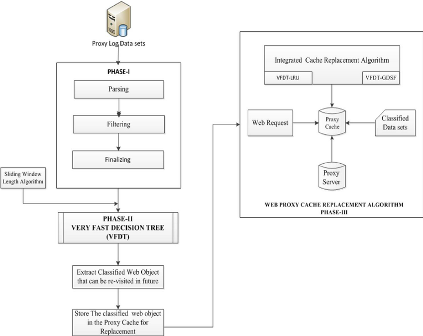
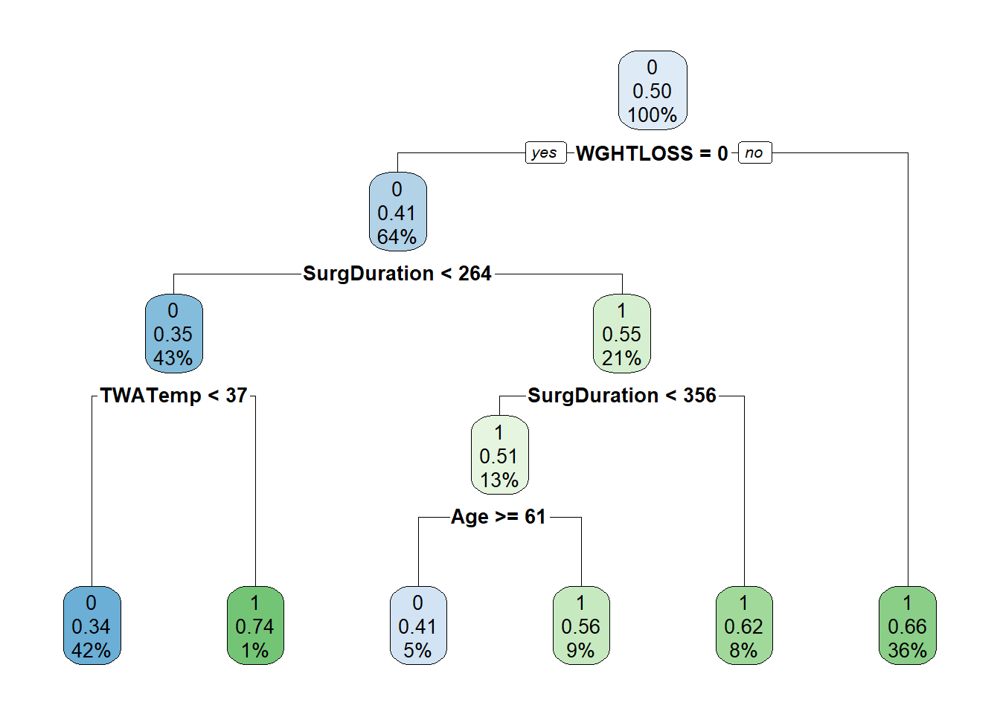

Initially, the creators aimed to assess various parameters, such as incremental frequency computation, incremental solving, similarity lower bounding, in-order feature selection, dynamic node selection, and dataset-based cache. During the tuning process, the algorithm underwent evaluation based on runtime performance and various metrics. Benchmark results were analyzed, and settings, where the differences were deemed insignificant, were excluded from further consideration in the tuning studies.
For the varying of the cache strategy which is an optimization technique used to speed up computer programs by using the data storage of expensive function calls and returning them when the same inputs are encountered again (Memoisation) and for each combination keep a consistent depth of depth of 3 to 4 and task the algorithms to compute fifteen optimal decision trees, one tree for each value of n ∈ [1, 15]. After tuning the parameters, it became evident that the inclusion of the cache dataset significantly improved performance. Interestingly, branch caching demonstrated a nuanced advantage over cache entries, showcasing a subtle yet discernible difference in performance metrics. This observation underscores the importance of carefully considering caching strategies to optimize algorithmic efficiency and overall computational outcomes. The provided illustration below gives an example of a caching strategy used in decision tree which results in quicker runtimes.

Activating lower bound similarity and incremental frequency computation in this configuration retained the same parameters as the previous setting, with a similar exclusion of insignificant benchmarks. The runtime analysis reaffirmed the importance of incremental computation over recomputation from scratch, highlighting its role in enhancing computational efficiency. Additionally, setting a lower bound contributed to reduced runtimes, emphasizing its significance in streamlining the computational process and optimizing performance.
Using the Gini coefficients the algorithm is run now including varying the feature selection strategy and the node selection strategy which is either post-order or dynamic. Since the creators have previously evaluated and adjusted the lower bound and incremental frequency parameters, setting these parameters appropriately demonstrates that random feature selection results in longer computational times due to the additional overhead of exploring a larger feature space. Dynamic node selection is consistently but minimally better to a fixed post-order selection because it allows for adaptability and responsiveness to the evolving structure of the decision tree. The dynamic node selection can adjust its strategy based on real-time information, leading to more efficient and effective decision-making processes.
In terms of scalability, the algorithm’s runtime is most significantly impacted by the depth of the tree, with the number of binary features also playing a notable role. However, drawing conclusive statements on the impact of the number of features on runtime is challenging due to the pruning mechanism inherent in the MurTree algorithm. Since pruning largely depends on the dataset structure, duplicating features would not provide definitive insights into their impact on runtime. Instead, it is more appropriate to consider the computational complexity of our algorithm and the number of possible decision trees as indicative measures of the influence of the number of binary features and the sparsity of the feature vectors on runtime.
The SAT method differs from the MurTree algorithm in optimizing decision trees. While SAT aims to construct the smallest decision tree with zero misclassification by subsampling datasets, MurTree directly minimizes misclassifications without subsampling. It efficiently computes optimal decision trees even on the same subsampled data used in the SAT paper, and it can optimize directly with complete datasets. The discrepancy in runtime between MurTree and SAT is due to MurTree’s specialized procedure leveraging classification tree properties. Since MurTree does not utilize such extendability with new constraints, no further comparison is made between this method.
A direct comparison between MurTree and OSDT using a ten-minute timeout with depth-four trees was experimented with. MurTree efficiently computed optimal trees with the specified objective within seconds, while OSDT may require minutes or even timeout. For the majority of benchmarks, OSDT timeouts unless the sparsity coefficient is set to be sufficiently high. As a result of increasing the spasticity coefficient, the computation time required to optimize the decision tree decreases because the algorithm doesn’t need to explore as many potential branches. MurTree, on the other hand, handled any sparsity coefficient within the time limit for trees with a maximum depth of four.
The comparison with GOSDT varies because controlling the depth or number of nodes isn’t directly supported; instead, the tree’s structure is influenced by the objective function and the sparsity coefficient. Results showed that GOSDT timed out on 65% of the datasets. Despite the absence of depth limitation, approximately 90% of the computed trees had a depth of at most four, with the maximum depth being seven, and all trees possessed a small number of nodes. These outcomes align with GOSDT’s aim of generating compact trees. However, the MurTree approach can swiftly generate optimal compact trees with any node count within seconds or minutes, even when the sparsity coefficient is zero. Notably, after executing the algorithm with a zero sparsity coefficient, the cache is populated, causing immediate extraction of a tree for any sparsity value. Essentially, the zero-case coefficient represents the worst-case scenario, and optimizing with higher sparsity coefficient values proves advantageous as it enables pruning.
DL8.5 major difference between the MurTree algorithm is that the number of feature nodes cannot be limited which means that full binary trees are evaluated. To ensure a fair comparison with the feature node selection strategy mentioned was set to maximum value. It is to be noted that the authors compared the methods using runtime instead of out-of-sample accuracy since the objective function is the same for both the MurTree and DL8.5 methods solving the same problem. Results showed that the MurTree algorithm was the fastest which is significant compared to DL8.5 since it outruns previously mentioned methods. This is due to the Mur tree employing additional techniques to further take advantage of the properties of decision trees instead of using off-the-shelf tools such as DL8.5.
Hyper-parameter tuning is what was used in class when conducting a simple classification tree while performing a stratified 5-fold cross-validation of a test/train set to obtain the accuracies. The model is trained on training sets and evaluated on test sets. I have attached a snippet of code used previously in our class to demonstrate how to properly compute for the 5-fold cross validation.
num_folds<-5
folds<-createFolds(train_data$SeriousInfection,k=num_folds,list = TRUE, returnTrain = FALSE)
crossval_errors<-matrix(NA,nrow=length(cp_values),ncol=5)
for(i in 1:length(cp_values)){
# Split data into stratified folds
for (j in 1:num_folds) {
train_set<-train_data[folds[[j]],]
validation_set<-train_data[-folds[[j]],]
#Extract class weights for the current fold
weights <- class_weights[folds[[j]]]
rpart1_model<-rpart(SeriousInfection ~ ., data = train_set, weights = weights,
method = "class",cp=cp_values[i])
predictions_tree<-predict(rpart1_model, newdata=validation_set, type="class")
crossval_errors[i,j]<-mean(predictions_tree!=validation_set$SeriousInfection)
}
}
crossval_errors_mean<-rowMeans(crossval_errors)
#print(crossval_errors_mean)
# Find the index of the minimum error
min_error_index <- which.min(crossval_errors_mean)
optimal_cp <- cp_values[min_error_index]The classification tree printed below used from a previous example in class in which we used cross validation for tree pruning.
tree_model_prune<-rpart(SeriousInfection ~.,weights=class_weights,data=train_data,method="class",cp=optimal_cp)
#saveRDS(tree_model_prune,file="tree_model_prune.rds")
tree_model_prune<- readRDS("tree_model_prune.rds")
#plot(tree_model_prune)
rpart.plot(tree_model_prune)
When comparing heuristic decision trees to optimal ones with various parameter settings, certain trends emerge. Initially, the optimal trees often display superior training accuracy, although with similar performance on the test set. This discrepancy suggests that the tree structure derived from CART (Classification and Regression Trees) may not be optimal for the dataset. Alternatively, heuristic decision trees offer a benchmark for parameter tuning, providing an upper bound on permissible parameter values based on CART-derived trees. However, fully exploiting MurTree algorithm parameters, particularly up to depth four, yields more promising results. This strategy demonstrates better training accuracy, while considering all parameter options consistently leads to superior out-of-sample accuracy across datasets. In summary, while heuristic decision trees are faster, the MurTree algorithm provides better generalization.
Random forests and optimal decision trees were tuned the same to make comparisons. While a forest of trees tends to be more accurate than a single decision tree, it is also less concise and harder for human interpretation. The random forests were tuned by adjusting for the number of trees, maximum depth, and a subset of features considered at each step. The results show that random forests generally outperform optimal decision trees on both training and test sets. However optimal decision trees of depth four achieve comparable performance in terms of accuracy. This suggests that optimal decision trees may be preferred for some applications over heuristically trained random forests. It is noted that different tuning strategies for random forests may result in lower or higher runtimes.
Just as the paper states that random forests are generally more accurate but less concise and harder to interpret compared to single decision trees. The provided random forest results below, showcasing a classification type model, align with this expectation, demonstrating a reasonably low out-of-bag (OOB) error rate of 8.5%.
# Separate your data into predictors (X) and the target variable (y)
X <- core_data[, -1] # Exclude the target variable column
y <- core_data[[1]] # Include only the target variable column
# Create the random forest model
rf_model <- randomForest(x = X, y = y)
# Print a summary of the model
print(rf_model)##
## Call:
## randomForest(x = X, y = y)
## Type of random forest: classification
## Number of trees: 500
## No. of variables tried at each split: 5
##
## OOB estimate of error rate: 8.5%
## Confusion matrix:
## 0 1 class.error
## 0 7232 2 0.0002764722
## 1 670 4 0.9940652819# Optionally, make predictions with the model
# Replace 'new_data' with your new dataset for prediction
predicted_values <- predict(rf_model, newdata = core_data)